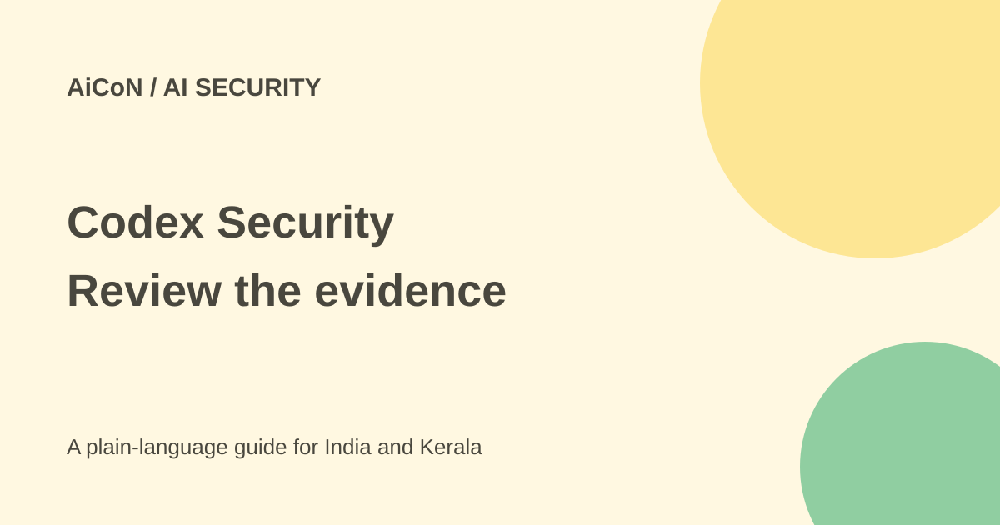

Codex Security Cloud: scans, billing and patch review
Codex Security Cloud investigates possible vulnerabilities in connected GitHub repositories. It proposes fixes for human review; it is not proof that your code is secure or permission to merge a patch.

What is Codex Security Cloud?
OpenAI describes a research-preview service that scans connected GitHub repositories through Codex Cloud. It builds a threat model tailored to the repository, investigates likely vulnerabilities and attempts to validate them in an isolated environment.
The official help page lists ChatGPT Enterprise, Edu, Business and Pro access. The developer overview still calls Cloud a research preview. A broad-release plan in the archive post is not a guarantee that every account or repository now has access.
Full scans and commit scans
You can scan a whole repository or its commits. The first scan builds context and examines repository history, which can take longer for large projects. Later scans of new code can be faster. A cloud scan does not require leaving your laptop open, but it does require the relevant service, repository permissions and available funding.
The threat model covers entry points, trust boundaries, sensitive data and important code paths. You can inspect and edit it to match how the application actually runs. Missing deployment context can cause a model to misunderstand a risk.
Validation is an attempt, not a guarantee
OpenAI says validation tries to reproduce a possible vulnerability in isolation before presenting it. That aims to reduce false positives. It does not prove every finding is exploitable in production, or that every real vulnerability has been found.
Read the evidence and assumptions. A test environment can differ from real authentication, infrastructure and data. Use human security review and your normal tests alongside the service. Assess only repositories and systems you are authorised to test.
Suggested patches need review
The official FAQ says Codex Security does not automatically modify your code. It proposes a patch that can be turned into a pull request. Review the change through your ordinary process before merging.
A fix can break behaviour or introduce a regression. Compare the patch with the root cause, run builds and tests, and check edge cases. The local Security plugin is a separate workflow inside a Codex chat, not the same as every Cloud scan or its billing.
Is it free?
The current help page says Cloud uses token-based billing. Existing customers receive notice and must opt in before paid usage begins. Scanning pauses if funding is unavailable. The sources checked do not establish a universal free allowance or a complete numeric rate table.
Check the actual billing notice, funding and limits before enabling scheduled scans. Paying for an eligible ChatGPT plan does not itself establish that all security scans cost nothing. Model access included inside this product also does not automatically grant API or other-product access.
How to evaluate it safely
- Confirm account eligibility, workspace controls and billing.
- Connect only repositories approved for cloud processing.
- Start with a small, lower-risk repository and named reviewers.
- Read and correct the threat model before relying on results.
- Run a limited scan and inspect findings, validation and patch options.
- Review a proposed pull request, test it and record the decision.
- Expand or schedule scans only after the data and cost scope is clear.
Workspace permissions and India
Enterprise and Edu admins need both Codex Cloud and Codex Security enabled, with a separate admin permission for managing scan configurations. Roles and groups can limit access. A repository missing from the picker may need workspace or integration changes rather than a new account.
For an Indian team, confirm employer and client approval before exposing private code. The checked public pages do not settle your contract's data-location needs. Do not connect every repository just because a scanner offers a convenient button.
What changed since the original post?
This guide adds current token billing, opt-in and human-patch-review details. It keeps research-preview status and separates Cloud from the local plugin. It does not repeat a promised broad-release date as current availability.
Frequently asked questions
Does it merge fixes automatically?
No. The FAQ describes a proposal for human review.
Is every scan included free?
No universal free claim is established; Cloud has token billing.
Was a repository scanned here?
No. This guide checks official documentation.
Sources: Developer overview · Current help and billing. Checked 7 October 2026.